CISCO Configuring Dynamic Routing - Enhanced Interior Gateway Routing Protocol (EIGRP) Routing
Enhanced Interior Gateway Routing Protocol (EIGRP) is termed an enhanced distance vector routing protocol. Originally based on CISCO's IGRP protocol, EIGRP uses a slightly more complex algorithm than RIP. Although it's labelled a distance vector protocol, it's technically a hybrid protocol. EIGRP calculates the best routes based on the information provided by neighboring routers. This information includes bandwidth, delay, reliability, load, and MTU (with only bandwidth and delay used by default).
Lab Setup
- GNS3 as the network emulation software.
- 2 PCs (Virtual PCs).
- 2 switches.
- 2 CISCO routers on IOSv 15.7 (Router - Cisco Modelling Labs Personal $199).
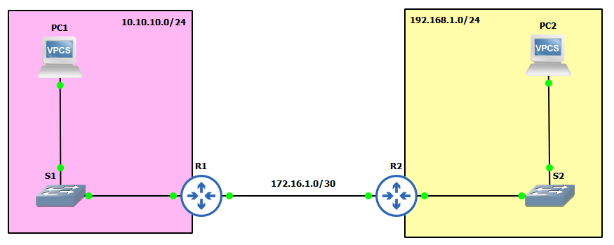
IP Schema
The IP schemas used in this lab are as follows:
- 2 LAN subnets: 192.168.1.0/24 and 10.10.10.0/24.
- 1 Router-to-router subnet: 172.16.1.0/30.
IP Addressing Interfaces and Virtual PCs
First, let's address the Virtual PCs:
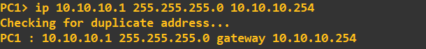
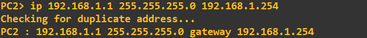
Next, I'll configure the router interfaces attached to each of these LANs. The address assigned to each of these interfaces is the last address in the subnet:
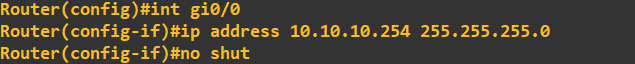
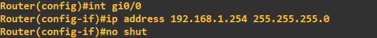
Finally, let's address the interfaces connected on the router-to-router link:
The hostnames of the routers have been changed to R1 and R2 for clarity:
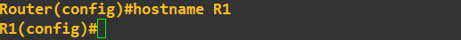
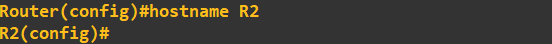
To prove their is currently no routing between the 192.168.1.0 and 10.10.10.0 subnets I am going to perform a ping check: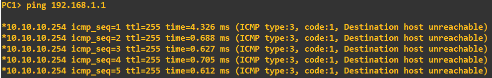
PC1 reaches its default gateway, but then fails to get any further.Employing EIGRP
We will now employ EIGRP as a routing protocol to enable connectivity. We enable EIGRP, set the Autonomous System Number (ASN) to the same on both routers, and advertise some networks:
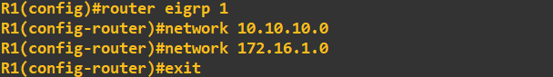
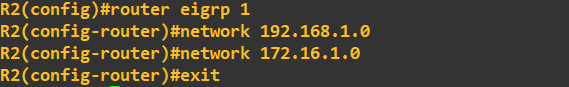
Think of the AS as a grouping number. If we wanted to add another router, we would need to set the ASN to same value if we wanted to share routes with it. The next step is to add some authentication, we'll do this by first creating a key chain called 'secrets' that holds a single key with the value 'slashroot':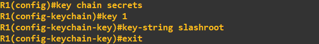
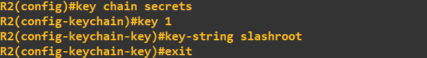
We need to do this on both routers - they both need the same key value, but you could name your key chains differently (point to note at this stage, you would use your organisations naming conventions). With the key chains and key now created, all we need to do is add this to interface we are using for EIGRP (the router to router link). We do this using the following commands: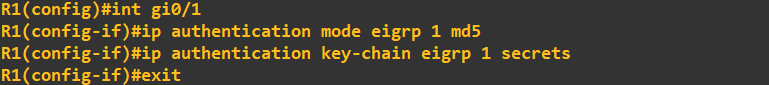
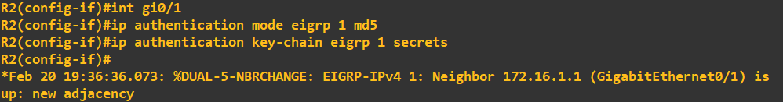
You'll notice in the R2 screenshot above I've included the EIGRP neighbour message. The screenshot below shows the same appearing on R1:
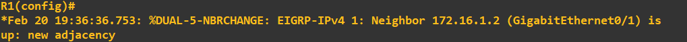
This is a good sign! We can be relatively confident that R1 and R2 are authenticating and sharing routes. I will do a quick ping check from PC1 to PC2 to confirm connectivity: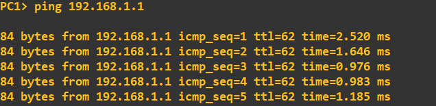
Let us quickly see what this looks like in Wireshark. From a capture on the line between R1 and R2 we can see the EIGRP HELLO messages being exchanged: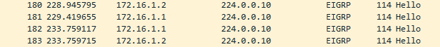
These HELLO messages are used to establish the relationship on the multicast address 224.0.0.10. Looking into one of these packets you will see the MD5 digest and the ASN: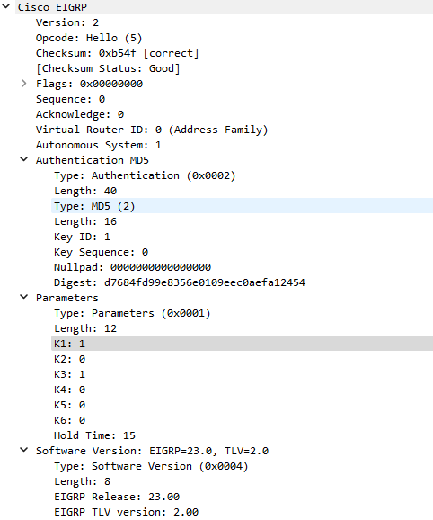